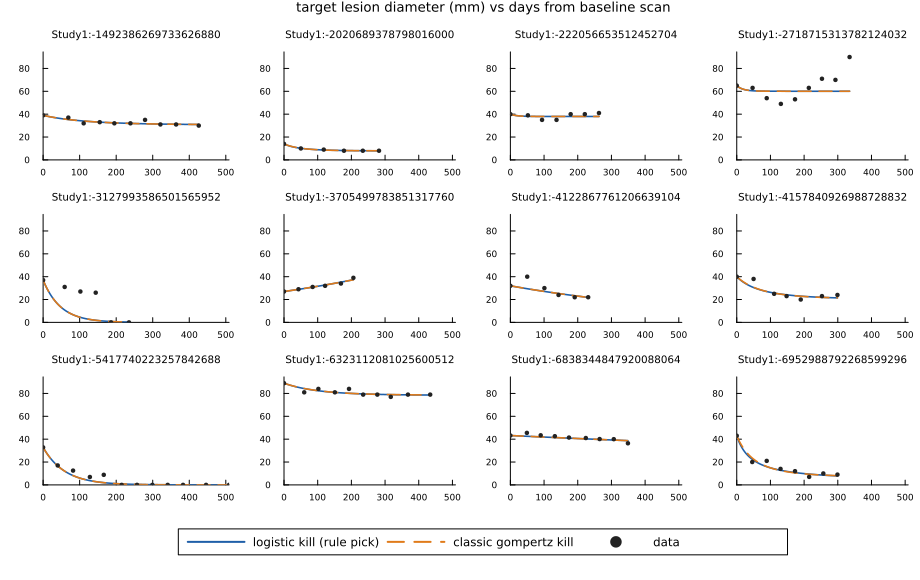
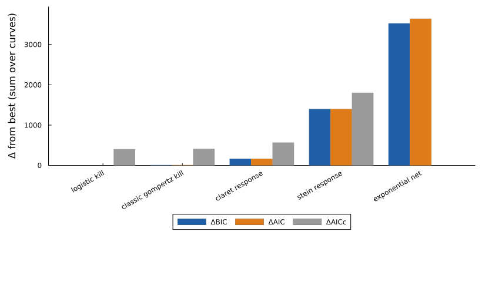
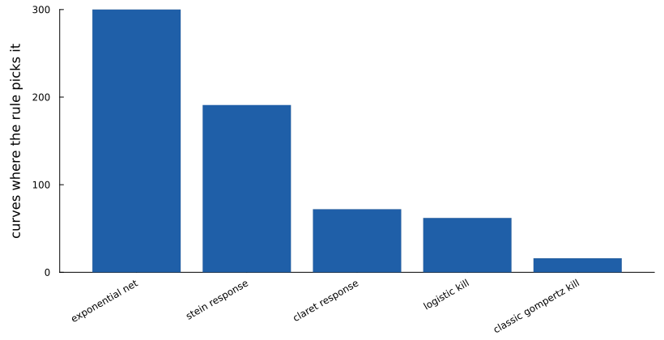
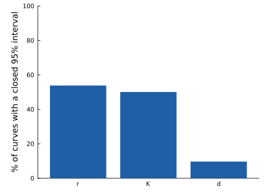
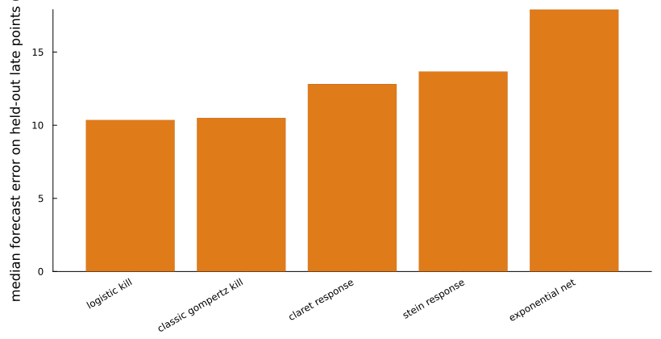

NSCLC and bladder cancer target-lesion diameters under atezolizumab/docetaxel
The paper found: Compared exponential, logistic, classic and general Bertalanffy, classic and general Gompertz. Gompertz gave the best balance of fit and parameters; general Bertalanffy and Gompertz predicted held-out scans best.
This page found: With explicit treatment laws, logistic growth with a kill term is the pick and Gompertz with a kill term is 9 BIC behind; the two forecast equally well (median error 10.4% vs 10.5%).
Why they differ / caveats: Gompertz is close but not the pick. The model panels differ: the paper fitted growth laws without an explicit treatment term, while this page adds a kill term and other response laws.
Ghaffari Laleh N et al. (2022) PLoS Comput Biol 18(2):e1009822, S1 Data · doi:10.1371/journal.pcbi.1009822 · source: https://doi.org/10.1371/journal.pcbi.1009822 · licence: CC BY 4.0
Longest diameter (mm) of target lesions in patients with non-small cell lung cancer or bladder cancer treated with atezolizumab or docetaxel in five clinical trials, measured on routine CT scans every few weeks. Ghaffari Laleh and colleagues fitted classic growth laws to these curves and asked how well each could predict later scans from early ones. Here the 641 patients with at least six scans are used.
Treatment-response laws. Every patient is on therapy for the whole series, so the panel swaps the growth laws for laws that can shrink: one net exponential rate, the Stein bi-exponential model (a shrinking and a regrowing part), the Claret model (growth with a fading drug effect), and logistic and Gompertz growth with a constant kill rate. The baseline scan is taken as the start of treatment; in the data it falls up to 38 days earlier.
Reading the result. Pooled over patients, logistic growth with a kill term wins, with Gompertz plus kill 9 BIC behind. Per patient the simplest law, one net exponential rate, is the pick for about half of the curves, because six to ten scans rarely show more than a steady trend. The profiles show what the pooled ranking hides: the growth rate and the kill rate are almost never separately identifiable (the kill rate has a closed interval on about 10% of patients). With therapy always on, the scans only see their difference.
Model comparison
Each of the 641 curves was fitted separately with every model. Criteria are summed over curves and shown as differences from the best model. The rule picks the model with the fewest parameters within 2 BIC of the best: logistic kill.
| Model | k | ΔBIC | ΔAIC | ΔAICc | Curves where picked |
|---|---|---|---|---|---|
| logistic kill (pick) | 3 | 0.0 | 0.0 | 402.1 | 62 |
| classic gompertz kill | 3 | 8.9 | 8.9 | 411.0 | 16 |
| claret response | 3 | 164.9 | 164.9 | 567.0 | 72 |
| stein response | 3 | 1399.6 | 1399.6 | 1801.7 | 191 |
| exponential net | 1 | 3525.9 | 3641.9 | 0.0 | 300 |



Identifiability of the pick
Profile likelihood on every curve (each parameter fixed on a grid, the others refitted; 95% cutoff χ²₁ = 3.84). A parameter counts as identifiable on a curve when its interval closes inside the bounds.
| Parameter | Median estimate | Curves identifiable (%) |
|---|---|---|
| r | 0.00645 | 54 |
| K | 45.691 | 50 |
| d | 0.000624 | 10 |

Forecast check
Each model was refitted on the first 70% of each curve and asked to predict the rest.
| Model | Median relative error (%) | Predictions within 20% (%) |
|---|---|---|
| logistic kill | 10.4 | 70.7 |
| classic gompertz kill | 10.5 | 70.8 |
| claret response | 12.8 | 64.3 |
| stein response | 13.7 | 59.5 |
| exponential net | 17.9 | 54.3 |

Package diagnostics
The package's built-in tools, run on every model in the panel on the same 12 evenly spaced curves, each starting from its showcase fit: fisher_information, profile_likelihood, bootstrap_joint_fit (residual, 40 resamples) and synthetic_recovery_benchmark (20 simulated data sets per curve), plus 5-fold cross-validation. Script: showcase/analyses/package_checks.jl.
The 10% proportional error sets the weights; its overall size is estimated from each fit's residuals (the same maximum-likelihood scale the BIC and the showcase profile use). Here the residual scatter is a median 0.8× the nominal 10%, so every interval and simulated data set is calibrated to the scatter the data really have.
For logistic kill, the Fisher (Wald) interval is within a factor of 1.5 of the profile interval for 0 of 36 parameter-curve pairs. Where they disagree, trust the profile and bootstrap intervals: the Fisher interval assumes the likelihood is quadratic around the estimate.
Every model (medians over curves and parameters)
| Model | Parameters | Fisher agrees with profile (%) | Profile interval closes (%) | Bootstrap 95% width (% of estimate) | Synthetic recovery: abs. bias (%) | Cross-validation: held-out error (%) | Held-out points within 20% (%) | Folds converged (%) |
|---|---|---|---|---|---|---|---|---|
| exponential net | 1 | 100 | 100 | 4918.4 | 3.9 | 14.0 | 83.3 | 98.3 |
| stein response | 3 | 31 | 53 | 19316.1 | 23.6 | 5.8 | 100.0 | 100.0 |
| claret response | 3 | 17 | 42 | 276740.6 | 193.0 | 7.1 | 93.8 | 100.0 |
| logistic kill (pick) | 3 | 0 | 53 | 10323.0 | 27.9 | 6.7 | 100.0 | 100.0 |
| classic gompertz kill | 3 | 22 | 61 | 23546.6 | 56.0 | 6.6 | 100.0 | 100.0 |
Profile interval closes: the 95% interval ends inside the parameter bounds on both sides. Cross-validation: the first point is the initial condition and stays in every training set; the others are dealt into 5 interleaved folds, each refitted with the showcase objective and predicted from the full curve, so this tests interpolation. A fold counts as converged when its fit reaches a weighted error per point within 4× the full-curve fit's (retried with up to 32 starts); folds that never do are not scored. The forecast check above tests extrapolation.
The pick, logistic kill, parameter by parameter. 95% interval width as median % of the estimate (in brackets: share of curves where the interval closes), and synthetic recovery.
| Parameter | Fisher (Wald) | Package profile | Showcase profile | Bootstrap | Recovery: median bias (% of truth) | Recovery: median RMSE (% of truth) |
|---|---|---|---|---|---|---|
| r | 51410.0 | 1472.9 (58%) | 0.0 (75%) | 196.8 | 45.2 | 211.3 |
| K | 0.0 | 196839.4 (83%) | 77380.6 (67%) | 19.5 | -0.0 | 11.2 |
| d | 10610783.9 | 677.5 (17%) | 2493.7 (8%) | 89.6 | 3.9 | 84.0 |
The package profile uses the package's default grid plus points at ±0.5 to ±4 Fisher standard errors around the estimate. profile_likelihood reports the outermost grid points inside the cutoff, which reads about 20% narrow at this spacing, so the widths here interpolate the crossing between grid points. The showcase profile searches outward and bisects the crossing, and uses the exact log-likelihood ratio n·log(wSSE/wSSE₀) rather than its quadratic form, so it reads slightly wider.
Reproduce
python3 -I showcase/data/prepare.py --only ghaffarilaleh2022_recist
julia --project=showcase -t auto showcase/run_pipeline.jl --only ghaffarilaleh2022_recistFitted with GrowthParameterEstimation.jl 0.5.5. Results: showcase/results/ghaffarilaleh2022_recist/.